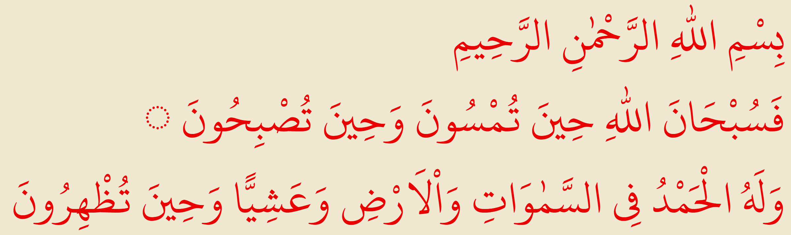
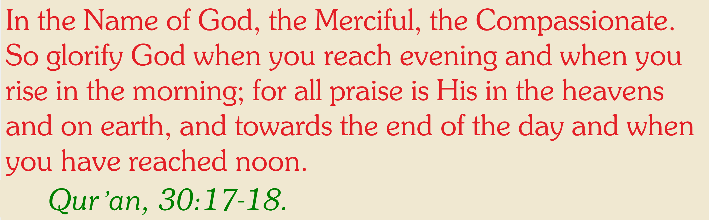
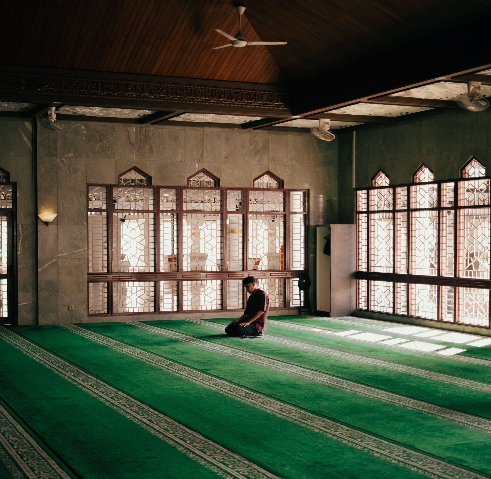

The Ninth Word of The Words by Imam Said Nursi explains why the five daily prayers (Salah/Namaz) are prescribed at specific times of the day.
Its central message is that the five prayer times are not arbitrary. Each one corresponds to an important transformation in the universe and reminds us of God's power, mercy and countless blessings.
Imam Nursi explains this through five main points.

Prayer brings together three fundamental forms of worship:
These three meanings are present throughout the words and movements of Salah.
This is also why these phrases are repeated 33 times each after prayer: to reinforce the meaning of worship.
Imam Nursi explains that worship is an expression of our relationship with God.
We recognize three fundamental realities:
Through prayer, we turn towards God's perfection, power and mercy.
The movements of Salah express these meanings:
Prayer is therefore not something God needs from us; it is an expression of what we need from Him.
Imam Nursi makes an interesting comparison:
Everything in the universe glorifies and obeys God in its own way. Human prayer brings together these different meanings through conscious worship.
In this sense, when a person prays, they participate in the universal worship of creation.
Imam Nursi compares the daily cycle of prayer to a clock. Just as seconds, minutes, hours and days are connected, the different stages of a day reflect larger transformations in nature, human life and the universe.
The movements of Salah express these meanings:
The following morning represents resurrection: just as morning follows night and spring follows winter, the Resurrection follows the intermediate life.
The final point explains why human beings need prayer.
We are:
Imam Nursi explains how each prayer provides spiritual support throughout these difficulties.
| Prayer | Spiritual significance | ||
|---|---|---|---|
| Fajr | Asking God for strength and guidance before beginning the day's challenges. | ||
| Dhuhr | Taking a break from worldly distractions and expressing gratitude. | ||
| Asr | Reflecting on the passing of time and thanking God for the day's blessings. | ||
| Maghrib | Turning towards the Eternal Creator when remembering death and separation. | ||
| Isha | Ending the day by seeking God's protection, mercy and guidance. |
Prayer reconnects us with the Eternal One rather than allowing us to become completely absorbed in temporary worldly things.
The Ninth Word teaches that: The five daily prayers are spiritual connections with God that remind us of the great transformations of existence, express our gratitude for His blessings and provide the strength our souls need throughout life's journey.